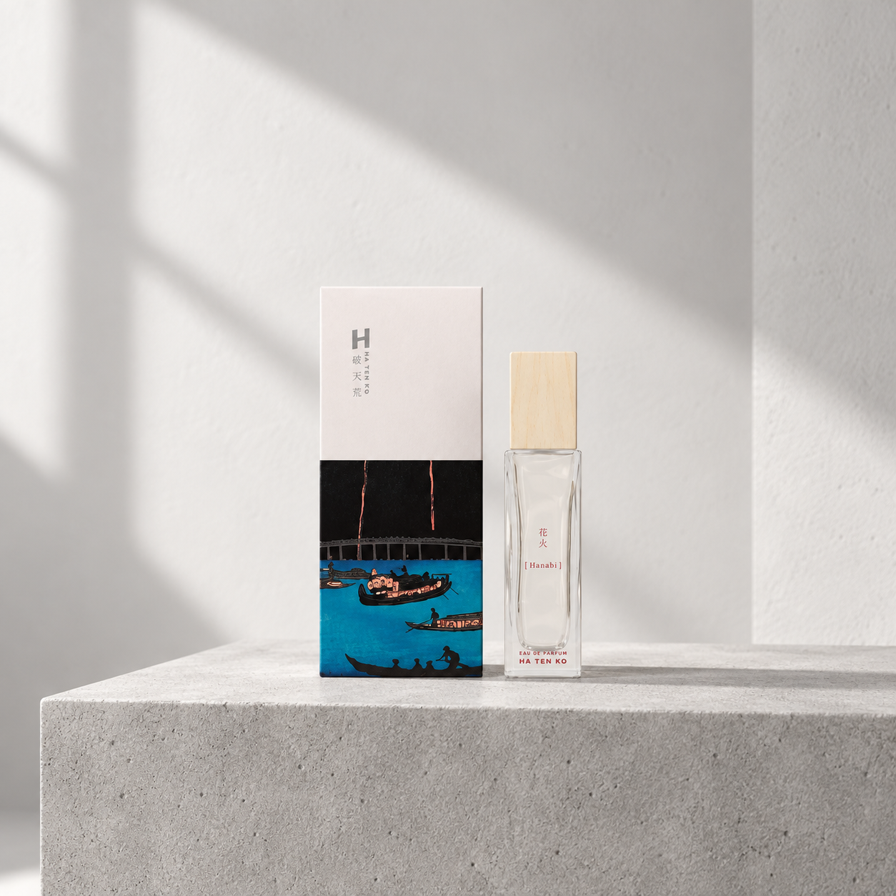

HATENKO / 破天荒
HATENKO Eau De Parfum 花火
香りの余韻を、手元に。
SCENT
夜空にひらく花火のように、記憶に残る香り。伝統と革新を重ねたHATENKOの世界を、日々の手元で静かに感じるためのオードパルファムです。


HATENKO / 破天荒
香りの余韻を、手元に。
SCENT
夜空にひらく花火のように、記憶に残る香り。伝統と革新を重ねたHATENKOの世界を、日々の手元で静かに感じるためのオードパルファムです。